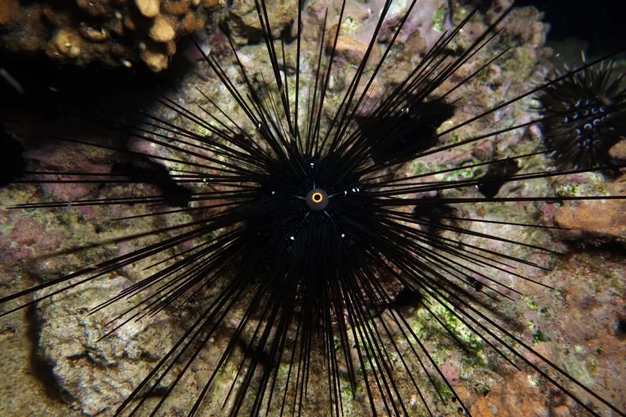

其他无脊椎动物 · 动物界
刺冠海胆 Diadema setosum

印度洋—太平洋珊瑚礁的黑色海胆，棘刺细长中空且带毒，刺伤剧痛，夜间出来啃食藻类，是礁区重要的植食者。
- 分类
- 门棘皮动物门纲海胆纲目冠海胆目科冠海胆科属冠海胆属
- 栖息环境
- 热带珊瑚礁的礁坪、海草床和沙泥底，水深 0–30 米
- 地理分布
- 印度洋—太平洋热带海域，从红海到太平洋岛屿
- 保护级别
- IUCN 暂无评估
物种志
刺冠海胆的壳径 5–9 厘米，棘刺细长如针，长可达 10–30 厘米，黑色并带蓝色或白色细纹，棘刺中空、易折断，内部含有毒液。壳中央有蓝灰色或白色的肛乳突，是它区别于近缘种的特征。
它分布于印度洋—太平洋的热带珊瑚礁，常见于礁坪、海草床和沙泥底，水深 0–30 米，白天藏在珊瑚缝隙和岩石下，夜间成群出来啃食藻类，对控制礁区藻类过度生长有重要作用。刺冠海胆的棘刺刺入皮肤后会折断并释放毒液，引起剧痛、红肿和灼热感，严重时可能感染；被刺后应尽快取出残刺，用热水浸泡并及时就医。它在加勒比海等地曾因疾病大量死亡，导致藻类暴发，说明其对礁区生态平衡的重要性。
形态与习性
- 壳径约 5–9 cm
- 棘刺长 10–30 cm，中空带毒，易折断
- 食性夜间啃食礁区藻类
- 活动节律夜行性，白天藏在珊瑚缝隙和岩石下
- 刺伤风险刺伤剧痛红肿，取出残刺、热水浸泡并及时就医
- 生态作用控制藻类生长，维持礁区平衡
趣味知识
- 刺冠海胆的棘刺中空带毒，刺入皮肤后容易折断留下残刺。
- 夜间成群出来啃食藻类，能防止藻类覆盖珊瑚。
- 加勒比海的刺冠海胆曾因疾病大量死亡，导致礁区藻类暴发。